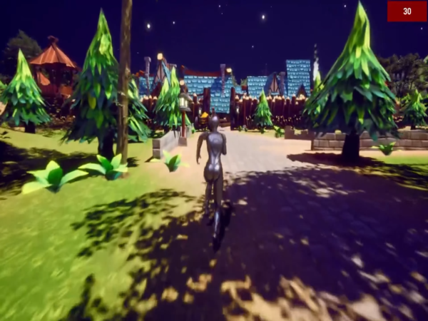

Présentation du Projet : Jeu Vidéo
Introduction
Lors de la CodeGameJam2024, notre équipe a relevé le défi de développer un jeu vidéo en seulement 30 heures.
Découvrez le gameplay de notre jeu sur Youtube
Captures d'écran
Expérience personnelle
Participer à la CodeGameJam2024 a été une aventure intense et enrichissante. Créer Shadow Of Memory m'a permis de développer mes compétences en :
- Travail en équipe : Collaborer efficacement avec des coéquipiers passionnés pour surmonter des défis techniques et créatifs.
- Gestion du stress : Travailler sous la pression d'un temps limité tout en maintenant une vision claire du projet.
Technologies utilisées
- Unreal Engine 5
Compétence 1 : Réaliser un développement d’application
- Conception et développement : Analyse rapide des besoins pour concevoir un jeu fonctionnel sous Unreal Engine 5, avec des fonctionnalités respectant les attentes des joueurs.
- Programmation collaborative : Développement des mécaniques de jeu en équipe en utilisant les Blueprints et le scripting pour une implémentation efficace et rapide.
- Création d’interfaces utilisateurs : Développement d'un HUD (interface utilisateur) minimaliste pour améliorer l'expérience de jeu.
Compétence 2 : Optimiser des applications
- Performances : Optimisation du jeu pour garantir des temps de chargement rapides et un gameplay fluide malgré des contraintes matérielles.
- Gestion des ressources : Mise en œuvre de techniques de réduction d’utilisation de ressources (textures, objets 3D) pour un meilleur rendu tout en respectant les contraintes de temps.
- Approche écologique : Réflexion sur l’impact des choix techniques en termes de consommation énergétique pendant le développement.
Compétence 3 : Administrer des systèmes informatiques communicants complexes
- Déploiement du jeu : Configuration et déploiement d'une version fonctionnelle pour une démonstration fluide, en utilisant des serveurs locaux pour tester la compatibilité sur différentes machines.
- Collaboration via des outils en réseau : Utilisation de Git pour le partage et la synchronisation des fichiers du projet, garantissant une intégration continue des contributions de l'équipe.
- Gestion des ressources en réseau : Mise en place d’un environnement partagé pour tester les fonctionnalités du jeu en temps réel sur plusieurs postes de travail.
- Sécurité et fiabilité : Protection des données échangées et des assets du jeu avec des restrictions d'accès et des sauvegardes automatiques.
Compétence 4 : Gérer des données
- Gestion des états : Conception et gestion des données en temps réel, comme la sauvegarde des scores ou des états de jeu, pour une expérience fluide.
- Intégrité des données : Validation des données utilisateurs (comme les choix du joueur) pour éviter les comportements inattendus.
Compétence 5 : Conduire un projet
- Gestion du temps : Développement et finalisation du projet dans une contrainte stricte de 30 heures.
- Documentation : Élaboration rapide de documents de référence pour aligner les membres de l’équipe sur les objectifs et assurer le suivi.
Compétence 6 : Collaborer au sein d’une équipe
- Coordination : Communication efficace avec les membres pour synchroniser le travail sur les différents aspects (game design, programmation, graphisme).
- Travail d’équipe :Exploitation des compétences complémentaires des membres pour maximiser les résultats.
- Gestion des conflits :Résolution rapide des désaccords grâce à une communication claire et constructive.